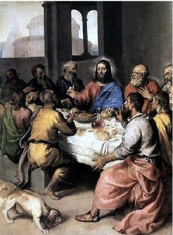

Publicans, or tax collectors, were unclean for a number of reasons, among which was their handling of pagan currencies and acceptance of bribes. Jesus made a point of associating with such social untouchables and praising their attitude of abject humility before God as opposed to the pride of the sanctimonious. Pharisees made a point of following the Law to a ludicrous degree, while the Essenes tried to purify themselves, expecting thereby to be admitted to the Kingdom.

Mt 9:10 And it came to pass, as Jesus sat at meat in the house, behold, many publicans and sinners came and sat down with him and his disciples. 9:11 And when the Pharisees saw it, they said unto his disciples, Why eateth your Master with publicans and sinners? 9:12 But when Jesus heard that, he said unto them, They that be whole need not a physician, but they that are sick. 9:13 But go ye and learn what that meaneth, I will have mercy, and not sacrifice: for I am not come to call the righteous, but sinners to repentance.
~~~~~~~